Develop T24 Packages, Plugins and Code
Introduction & Prerequisites
This developer guide presents the required configurations and the main steps for the following actions:
- develop new/existent jBC routines and deploy them to your sandbox
- import/export applications/enquiries/versions from/to your sandbox to/from your local machine
- extract from the database/load in the database data (.d) files from/to your sandbox to/from your local machine.
For this purpose, you need to have access to:
- Design Studio (locally)
- T24 libraries (locally)
- TAFJ (locally)
- Temenos Sandbox (cloud)
- Tortoise Git (locally) - download from here.
A development package (containing Design Studio, T24 libraries and TAFJ) is provided by Temenos and it is pre-configured in order to be able to introspect T24 application hosted in Temenos Could Development Platform.
This package is adapted according to the T24 version of your sandbox and it is provided as a .zip file.
After extracting it in your local machine to any location, the bellow foldimers should be available:
- DS
- t24Lib
- TAFJ
To be able to interrogate the sandbox database, following update must be applied to tafj.properties file from Your_DEV_Path\TAFJ\conf:
temn.tafj.jdbc.url=jdbc:h2:tcp://ENV_DNS:9092/TAFJDB;MODE=Oracle;TRACE_LEVEL_FILE=0;
TRACE_LEVEL_SYSTEM_OUT=0;DB_CLOSE_ON_EXIT=FALSE;
FILE_LOCK=NO;IFEXISTS=TRUE;CACHE_SIZE=131072;
MVCC=TRUE;LOCK_TIMEOUT=30000
Replace ENV_DNS with your environment DNS. See below example:

Create New Project in Design Studio
In order to accomplish the development actions presented at the beginning of the guide, you need to create a new project in Design Studio.
- Start Design Studio from DesignStudio folder using StartDesignStudio.bat file and choose the default workspace (Your_DEV_Path\DesignStudio\workspace) or any other workspace from your local machine.
- After Design Studio starts, go to File > New > Project.
- Select Design Studio Template Project from Design Studio item and click Next.
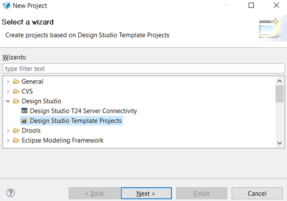
- In the next screen, select t24-packager-tafj template from the drop down list and set tafjHome, insertDir and libDir parameters according to Your_DEV_Path.
Note
VERY IMPORTANT!
Make sure you set the following values as per below instructions, otherwise the package installation will fail:
project-name - always use small letters as per this standard: xx-name (in current example we used: ft-sample)
release - use the T24 release (example R17, R18, R19 etc.)
product-name: use ony two capital letters. Note that it must correspond to your project name:
- Example: if project-name is xx-name, the product-name must be XX
- Example: if project-name is ft-sample, the product-name must be FT
component name - must be the same as in project name, after the "-". Must start with capital letter.
- Example: if project-name is xx-name, the component-name must be Name
- Example: if project-name is ft-sample, the component-name must be Sample
version: make sure you input the correct version (example 18.11)
host - login to the portal, go to your Environment > Go to Application > Select the address of your T24 environment (example: https://t24-1abbbbbccc900.temenos.cloud)

Click Finish to create the project and 4 modules will be created, as per bellow picture.
-> ft-sample-data-code: holding basic routines and data files.
-> ft-sample-models: holding Design Studio models(applications, enquiries, versions) that can be imported/exported from/to your sandbox.
-> ft-sample-models-gen: holding files generated by Design Studio from the ft-sample-models project.
-> ft-sample-packager: holding the launcher for creating a T24 package that can be deployed to your sandbox.Make sure you check the secured box as in below picture:

Make sure you save the change CTRL+S.
Uncheck XML for Local Fields
Go to ft-sample-models > click right and select Properties > expand Design Studio > click Code Generation > expand All Categories > Uncheck XML for Local Fields (LT/RTL)

Click Apply and OK.
Create New T24 Server in Design Studio
Note
Check first if you already have available the Servers tab. If not, follow below steps.
A T24 Server is required in Design Studio to be able to import/export applications/enquiries/versions from/to your sandbox. Follow next steps to create and configure a T24 server:
On servers tab, click right and select Add New T24 Server.

A new screen is open. Type a name for the server(make sure it includes '-server' string) and click Next.

Choose connection type as T24 Server-Web Service and click Finish.

After the server is created, the server.properties must be updated according to your sandbox details:
-> In T24 User (deployment only) section, 2 users that you use to connect to your T24 sandbox must be introduced.
-> In WebService (TAFJ) Connection section, Secured box must be checked, Protocol must be set to ws value, Hostname must be set according to the hostname of your sandbox, Port must be set to 443 value and Context to axis2 value.
-> To get the hostname of your sandbox, log-in to your organisation in TCD Portal (Temenos Continuous Deployment), go to your enviroment page and click on the GO TO Application Endpoint for the T24 application. The BrowserWeb page of your sandbox is opened and from the URL of this page, you must select the part between https:// and /BrowserWeb/servlet/BrowserServlet.

Note
For future use, in case T24 Server is not visible, go to: Window > Show View > Other:

Type Server in the search bar and select Design Studio > Servers:

Toggle Project to TAFJ project nature
The Toggle TAFJ project nature action must be performed in order to be able to develop, compile and package jBC routines and to interrogate your sandbox database.
- Right click on data-code module and choose Toggle TAFJ project nature.

- In the next screen,
- tafj_properties from Your_DEV_Path/TAFJ/conf folder, choose TAFJ_HOME as Your_DEV_Path/TAFJ folder and click Next. In the bellow picture, DEV_Path is set to C:\TemenosDEV.

- In the next screens, click Next and Finish.

- In the end, data-code module should be toggled.

- A .properties file was created for your project in Your_DEV_Path/TAFJ/conf folder.
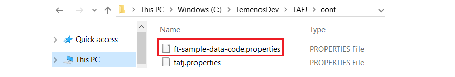
Note
If TAFJ properties for your project must be updated, make sure you update the .properties related to your project from Your_DEV_Path/TAFJ/conf folder.
jBC Routines Development
Note
In order to make sure your routine will be successfully created, it is important to have set correctly all the parameters when creating a new project. If necessary, check again this section.
jBC routines are developed in the data-code module which must be toggled to TAFJ project nature by following next steps.
- In order to create a new jBC routine, expand data-code module, go to src->Source->Private, right click on project name (FT_Sample in the above picture), select New and then New T24 routine / component / testcase.

- On next screen, type the name of the routine and click Finish.

- The new routine is created.

Create a T24 package based on your project
In order to deploy your developed routines in the sandbox, a T24 package must be created.
- Go to packager module in Design Studio workspace, right click on Launch T24 Packager (TAFJ).launch and choose Run As > Launch T24 Packager (TAFJ).

- Wait for successfull build for the project.

- Check where the package was generated.

Deploy a T24 package to Sandbox
Note
Make sure you cloned in your local machine the GitLab repository of your sandbox.
- Copy the generated package into the packages folder of the cloned GitLab repository from your local machine:

- If the package is a new file in the repository, the package must be first added to the repository:
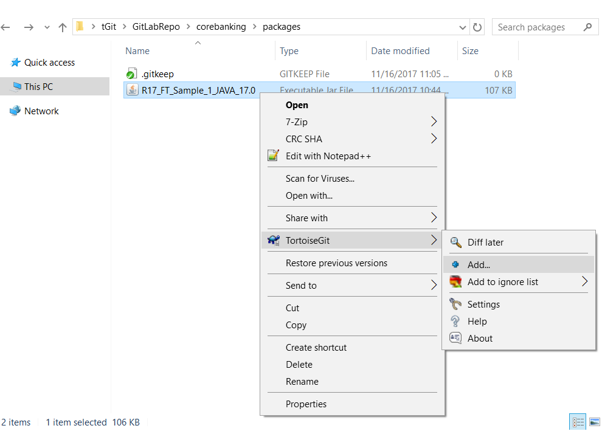 - A screen will appear saying that the file was added. Press Commit:
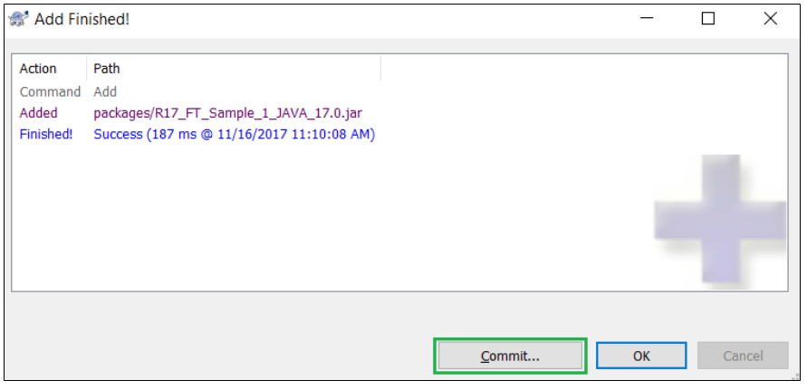 - A new screen will appear. Insert a comment in the upper window and then choose Commit.

- A new screen will appear and choose Push.
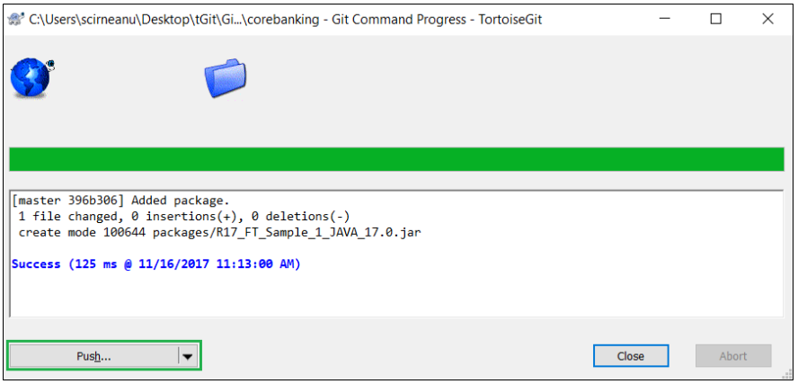 - A new screen will appear and choose OK.

- A success message should be displayed. Press Close.

Trigger the deployment
- After commiting and pushing to Environment Repository all the features, you have to deploy them in your Environment.
- Login to your organisation, select your environment, locate the Repository Application and click the Deploy button.
For more details about the deployment, check the following steps.
Check jBC routines deployment to Sandbox
- Log-in to your organisation into the Temenos Continuos Deployment Platform, go to your enviroment page and click on the Monitor Application Endpoint for the T24 application.
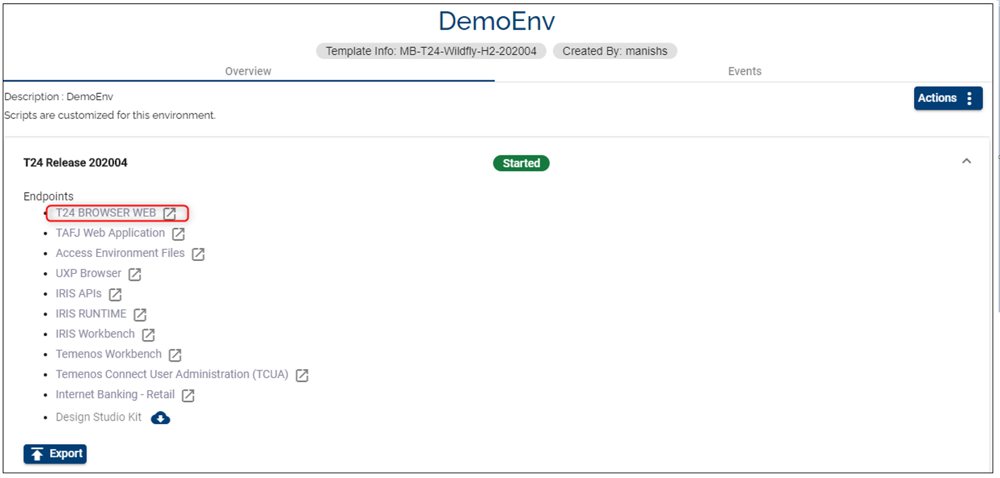 - The TAFJEE page is opened. Click tShow to check if your developed routines were deployed in your sandbox. Details like the compilation date or the jar that contains the class of those routines can be checked.
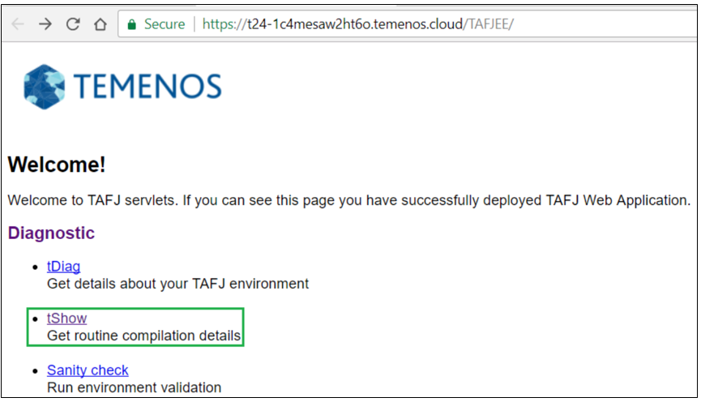 - In the next screen, input your routine name and click Submit.

- In the next screen, the details of your routine can be seen.

Import T24 Applications, Enquiries and Versions
Note
In order to import Applications/Enquiries/Versions from your sandbox to your local machine, make sure you have a T24-server created and configured in Design Studio.
Hint: When importing artefacts from a T24 Environments on the project you need to disable the XText RIM in order to speed up the operation and install or after a T24 update/upgrade.
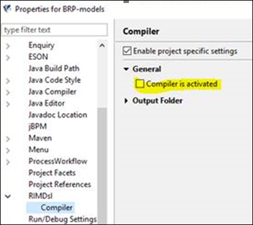
Then Import T24 Core Models or if your DS version has the Import T24 Core Models with the process after T24 update/upgrade (this tool is also available in headless mode).

- Go to Servers tab, right click on your server state and change state to active.

- State should become active:
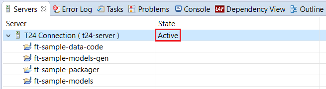
Note
The following example is about importing Enquiries from your sandbox to your local machine. The same steps can be aplied for Applications and Versions.
- After the T24-server is active, right click on the models module and choose Import:

- Expand Design Studio item, choose Import T24 Enquiries and click on Next button. (you have to wait until the list of enquiries is fetched from the sandbox database).

- Select from this list which enquiry you want to import from the sandbox to your local machine and click Next.

- Choose where to import the enquiry(Models folder from models module) and click Finish(wait until the operation is completed).
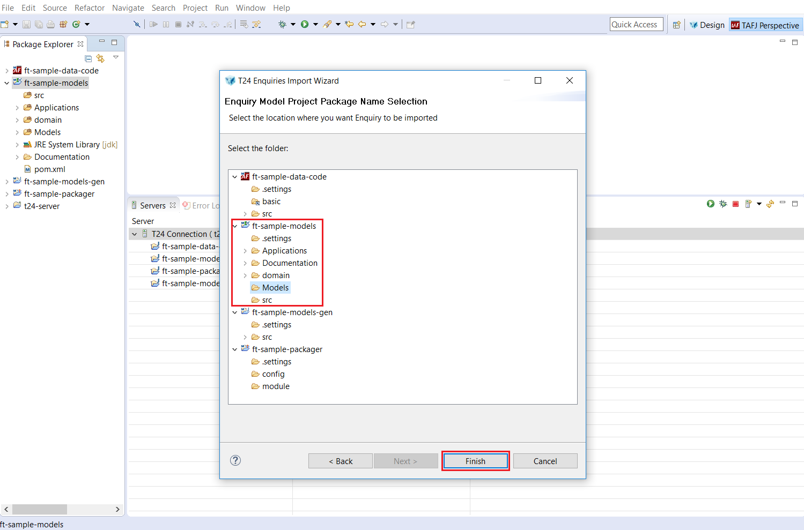 - A successful message will be displayed at the end and the enquiry will be saved in your local machine.

Export T24 Applications, Enquiries and Versions
Note
The following example is about exporting Enquiries from your local machine to your sandbox. The same steps can be aplied for Applications and Versions.
Note
Make sure your T24 server is set to active.
- Right click on the models module and choose Design Studio -> Generate Code:

- A message should be displayed saying that the enquiry was successfully modified.

Data (.d) files
A data(.d) file represents a details viewer of a record from the database. A data file has 2 columns:
-> first column contains the unique number of all table fields of the record;
-> second column contains the values for all table fields of the record.
Note
Assuming that your date-code module is toggled to TAFJ project nature, make sure you update the .properties file related to your project from Your_DEV_Path/TAFJ/conf folder with the private database IP of your sandbox.
Before starting to extract/load data files from/to your sandbox database, you must login to TAFJ-DBTools.
-> Right click on your data-code module and select DBTools login.

-> A wizard will appear in which you must type the DBTools credentials(which can be found in Add_DBTools_User.bat file from Your_DEV_Path) and click Finish.

Extract data files from the database
- Expand data-code module, go to src, right click on Data and select Extract from the database.

- The bellow wizard will appear. Make sure the URL of the Database contains the correct database IP of your sandbox. Otherwise, you have update your .properties file related to your project from Your_DEV_Path/TAFJ/conf folder.

- Type the Table Name and Record ID and click Finish.

- Check the console log to see if the data files was extracted.

Load data files in the database
- Right click on your data file and select Load in the database.

- The bellow wizard will appear and click Finish. Make sure the URL of the Database contains the correct database IP of your sandbox. Otherwise, you have update your .properties file related to your project from Your_DEV_Path/TAFJ/conf folder.
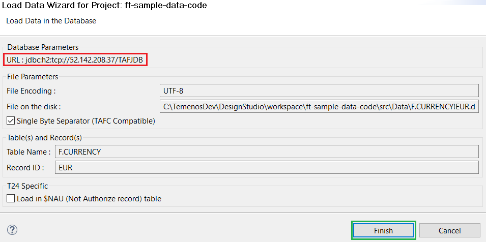
- A success message should be displayed in the console.

For more tutorials on how Design Studio works, please check here.